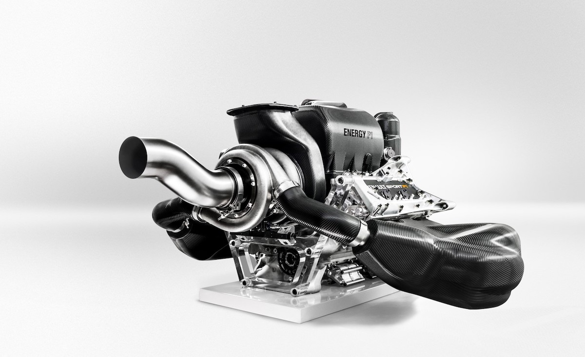

The Power Unit
Modern F1 cars use a 1.6-liter V6 turbo hybrid engine. It's not just an engine; it's a thermal efficiency masterpiece reaching over 50% efficiency.

Aerodynamics: Ground Effect
The 2026 regulations emphasize ground effect to allow cars to follow each other closely, making overtaking more about driver skill than clean air.